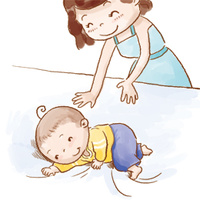

男婴：体重5.7-7.6kg，身长61.0-66.4cm，头围42.30cm，胸围42.68cm。
男婴：体重5.7-7.6kg，身长61.0-66.4cm，头围42.30cm，胸围42.68cm。
女婴：体重5.3-6.9kg，身长59.4-64.5cm，头围41.20cm，胸围41.60cm。
生理发展：
宝宝趴着的时候，能够用小胳膊撑着，把头和肩膀高高地抬起来。
大人扶住宝宝腋下，松开手后，宝宝能站立片刻。
心智发展：
开始对大人们吃的食物表现出兴趣。
感官与反射：
会把玩具从一只手换到另一只手上。
社会发展：
表达情绪的方式更加复杂。
被搔痒时会发笑。